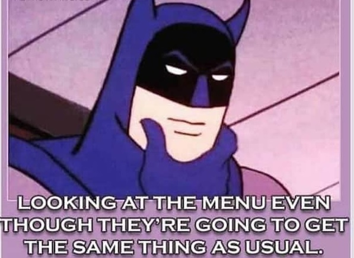

Symbol:The Bull
Element:Earth
Quality:Fixed
Keyword:"I Possess"
Ruling Planet:Venus
Strengths:Loyal, Hard willed, Sensual, Affectionate, Caring, Defensive of their loved ones
Weakness:Stubborn, Gluttonous, Lazy, Greedy, Procrastinate, High temperament
Headstrong, stubborn and hard willed individuals, People born under the sign of Taurus tend to enjoy the materialistic comforts in their lives.
They tend to be sensual and luxurious in their lifestyle. The reason behind this is that Taureans live their lives through their senses. Be it
taste, smell or any other. Taureans are born foodies.

They tend to be slow in deciding things for themselves, be it a project work or choosing a life partner. This is mostly due to the fact that
they invest their time and energy into a proper analysis of facts before taking on a decision. They have incredibly high morals and standards
in life.
As a fixed sign, Taurus tends to be committed to one perspective all along. They are so stubborn in their ways that it becomes difficult to even
convince them to change sides. This is usually because they take the side which they feel is correct and wont accept any other perspectives to
the point.
When it comes to their personal lives, Taureans are known to be one of the most loyal signs in the zodiac. They provide very sensual experiences
in bed. But they also expect the same in return. They are not that good in expressing their love by words because they prove their love by
actions, they are very affectionate and cuddly people and will go to any lengths for their loved ones.
Whenever things go wrong they tend to put the blame on themselves and in the process hurt their own selves. Taureans also have a flaw of
bottling up their emotions and unresolved things within themselves to the point where it explodes. And when it explodes, pray you aint anywhere
near when it happens.
Like the Spanish Toro they charge onto anything that threatens them or their loved ones. They tend to hold grudges and have the ability to
recall every moment when they were hurted in the past. So they may seem calm and collected and don’t get angry much easily. But when they do,
they charge head on.